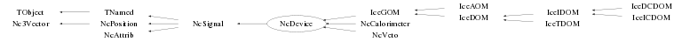

class NcDevice: public NcSignal
Class NcDevice Signal (Hit) handling of a generic device. Basically this class provides a user interface to group and handle various instances of NcSignal objects, called generically "hits". An NcDevice object itself has (in addition to hit storage) also the complete functionality of the class NcSignal. Example : NcDevice m; // Set user defined status word to indicate e.g. readout electronics version m.SetStatus(100201); m.SetHitCopy(1); m.SetName("OM123"); Float_t pos[3]={1,2,3}; m.SetPosition(pos,"car"); NcSignal s; s.Reset(1); s.SetName("OM123 Hit 1"); s.SetSlotName("ADC"); s.SetSignal(10); s.SetSlotName("LE",2); s.SetSignal(-100,2); s.SetSlotName("TOT",3); s.SetSignal(-1000,3); m.AddHit(s); s.Reset(1); s.SetName("OM123 Hit 2"); s.SetSlotName("ADC"); s.SetSignal(11); s.SetSlotName("LE",2); s.SetSignal(-101,2); s.SetSlotName("TOT",3); s.SetSignal(1001,3); m.AddHit(s); s.Reset(1); s.SetName("OM123 Hit 3"); s.SetSlotName("ADC"); s.SetSignal(12); s.SetSlotName("LE",2); s.SetSignal(-102,2); s.SetSlotName("TOT",3); s.SetSignal(-1002,3); m.AddHit(s); TObjArray* ordered=m.SortHits("TOT"); nhits=ordered->GetEntries(); for (Int_t i=0; i<nhits; i++) { NcSignal* sx=(NcSignal*)ordered->At(i); if (sx) sx->Data(); } --- Author: Nick van Eijndhoven 23-jun-2004 Utrecht University - Modified: NvE $Date: 2016-09-13 16:27:42 +0200 (Tue, 13 Sep 2016) $ NCFS
Function Members (Methods)
public:
protected:
| virtual void | TObject::DoError(int level, const char* location, const char* fmt, va_list va) const |
| void | TObject::MakeZombie() |
| void | NcAttrib::SetCalFlags(Int_t gf, Int_t of, Int_t j) |
| void | NcSignal::SetSigFlags(Int_t is, Int_t ie, Int_t j) |
Data Members
public:
| enum TObject::EStatusBits { | kCanDelete | |
| kMustCleanup | ||
| kObjInCanvas | ||
| kIsReferenced | ||
| kHasUUID | ||
| kCannotPick | ||
| kNoContextMenu | ||
| kInvalidObject | ||
| }; | ||
| enum TObject::[unnamed] { | kIsOnHeap | |
| kNotDeleted | ||
| kZombie | ||
| kBitMask | ||
| kSingleKey | ||
| kOverwrite | ||
| kWriteDelete | ||
| }; |
protected:
| TArrayI* | NcAttrib::fCalflags | Flags to mark dead, edge, and gain/offset calibrated signals |
| TObjArray* | NcAttrib::fCalfuncs | Explicit signal calibration functions |
| TObjArray* | NcAttrib::fDecalfuncs | Explicit signal de-calibration functions |
| TObject* | NcSignal::fDevice | Pointer to the device that owns this signal |
| Double32_t | Nc3Vector::fDresult | ! Error on scalar result (e.g. norm or dotproduct) |
| TArrayF* | NcSignal::fDsignals | Errors on signal values |
| TArrayF* | NcAttrib::fGains | Gain values |
| Int_t | fHitCopy | Flag to denote making private copies of added hits |
| TObjArray* | fHits | Array to hold the registered hits |
| NcObjMatrix* | NcSignal::fLinks | Pointers of objects related to the various slots |
| TObjArray* | fMarkers | ! Temp. array to hold the 3D markers for the hit display |
| TString | TNamed::fName | object identifier |
| TObjArray* | NcAttrib::fNames | User defined names for the various slots |
| Int_t | Nc3Vector::fNv | The number of components of the array fV |
| TArrayF* | NcAttrib::fOffsets | Offset values |
| TObjArray* | fOrdered | ! Temp. array to hold the ordered hits |
| Float_t | NcPosition::fScale | The unit scale used for the position coordinates |
| TArrayI* | NcSignal::fSigflags | Flags to mark setting of signal and/or error values |
| TArrayF* | NcSignal::fSignals | Signal values |
| Int_t | fStatus | User definable status word |
| TString | TNamed::fTitle | object title |
| TObjArray* | NcSignal::fTracks | Pointers to associated tracks |
| NcTimestamp* | NcPosition::fTstamp | The timestamp for this position |
| Double32_t* | Nc3Vector::fV | [fNv] Vector in spherical (and errors in Cartesian) coordinates |
| TObjArray* | NcSignal::fWaveforms | The 1D histograms containing the signal waveforms |
Class Charts
{kind=link}
{kind=link}
{kind=link}
{kind=link}

Function documentation
NcDevice()
Default constructor. The user definable status word is set to zero. By default private copies of the recorded hits will be made. This implies that by default the device will own the registered hits. See the SetHitCopy() memberfunction for further details.
void SetHitCopy(Int_t j)
(De)activate the creation of private copies of the NcSignals added as hits.
j=0 ==> No private copies are made; pointers of original hits are stored.
j=1 ==> Private copies of the hits are made and these pointers are stored.
Note : Once the storage contains pointer(s) to hit(s) one cannot
change the HitCopy mode anymore.
To change the HitCopy mode for an existing NcDevice containing
hits one first has to invoke either RemoveHits() or Reset().
Int_t GetHitCopy() const
Provide value of the HitCopy mode. 0 ==> No private copies are made; pointers of original hits are stored. 1 ==> Private copies of the hits are made and these pointers are stored.
void AddHit(NcSignal& s)
Register an NcSignal object as a hit to this device. Note : In case this device owns the NcSignal object, the pointer to this device will be stored in the special owning device pointer of the NcSignal object and all (backward) links to this device will be removed from the NcSignal object. In case this device does not own the NcSignal object, a (backward) link to this device is added to the first slot of the NcSignal if there was no link to this device already present. This (backward) link is essential to prevent pointers to non-existing NcSignal objects when the corresponding NcSignal object is deleted.
Int_t GetNhits(TString name, Int_t mode = 0, Int_t opt = 0) const
Provide the number of hits registered with the specified hit or slot name.
mode = 0 --> Only hits with a matching hit name will be considered
1 --> Only hits with a matching slot name will be considered
2 --> Hits matching in either hit name or slot name will be considered
opt = 0 --> The specified name has to match exactly the hit or slotname
1 --> The specified name string has to be contained in the hit or slotname
The defaults are mode=0 and opt=0.
NcSignal* GetHit(Int_t j) const
Provide the NcSignal object registered as hit number j. Note : j=1 denotes the first hit.
NcSignal* GetHit(TString name, Int_t mode = 0, Int_t opt = 0) const
Provide the NcSignal object registered as hit with the specified hit or slot name. Note : The first hit encountered with the specified name will be provided. mode = 0 --> Only hits with a matching hit name will be considered 1 --> Only hits with a matching slot name will be considered 2 --> Hits matching in either hit name or slot name will be considered opt = 0 --> The specified name has to match exactly the hit or slotname 1 --> The specified name string has to be contained in the hit or slotname The defaults are mode=0 and opt=0.
void GetHits(TObjArray& selected, TString name, Int_t mode = 0, Int_t opt = 0, TObjArray* hits = 0) const
Provide the references to selected hits by looping over the input array "hits" and checking for the specified hit or signal slot name. A "hit" represents an abstract object which is derived from NcSignal. The selected hits are returned via the user provided TObjArray "selected". In case hits=0 (default), all the registered hits of the current device are used in the search. Note that the input array "hits" (when provided) is not modified. selected : The user provided array which will hold all the references to the selected hits. name : The user provided hit or signal slot name to be used for the hit selection. mode = 0 --> Hits with a matching hit name will be selected 1 --> Hits with a matching signal slot name will be selected 2 --> Hits matching in either hit name or signal slot name will be selected -1 --> Hits with NO matching hit name will be selected -2 --> Hits with NO matching signal slot name will be selected -3 --> Hits with NO matching hit name nor signal slot name will be selected opt = 0 --> The specified name has to match exactly the hit or slotname 1 --> The specified name string has to be contained in the hit or slotname hits : Optional input array with NcSignal objects to be used for the search. The defaults are mode=0, opt=0 and hits=0.
void ShowHit(Int_t j = 0, TString f = "car", TString u = "rad") const
Show data of the registered j-th hit according to the specified coordinate frame f. If j=0 all associated hits will be shown. The string argument "u" allows to choose between different angular units in case e.g. a spherical frame is selected. u = "rad" : angles provided in radians "deg" : angles provided in degrees The defaults are j=0, f="car" and "u=rad".
void Data(TString f = "car", TString u = "rad") const
Print the device and all registered hit info according to the specified coordinate frame f. The string argument "u" allows to choose between different angular units in case e.g. a spherical frame is selected. u = "rad" : angles provided in radians "deg" : angles provided in degrees The defaults are f="car" and u="rad".
void GetExtremes(Float_t& vmin, Float_t& vmax, Int_t idx = 1, TObjArray* hits = 0, Int_t mode = 1, Int_t deadcheck = 1) const
Provide the min. and max. signal values of an array of hits. The input argument "idx" denotes the index of the signal slots to be investigated. The default is idx=1; In case hits=0 (default), the registered hits of the current device are used. The gain etc... corrected signals will be used in the process as specified by the "mode" argument. The definition of this "mode" parameter corresponds to the description provided in the GetSignal memberfunction of class NcSignal. The default is mode=1 (for backward compatibility reasons). The argument "deadcheck" allows to reject signals which were declared as "Dead". If deadcheck=0 the dead signals will be treated in the same way as the other signals. To achieve an identical treatment of dead and alive signals, the setting of deadcheck=0 will automatically set also mode=0 to retrieve the stored signal values "as is". The default is deadcheck=1 (for backward compatibility reasons).
void GetExtremes(Float_t& vmin, Float_t& vmax, TString name, TObjArray* hits = 0, Int_t mode = 1, Int_t deadcheck = 1) const
Provide the min. and max. signal values of an array of hits. The input argument "name" denotes the name of the signal slots to be investigated. In case hits=0 (default), the registered hits of the current device are used. The gain etc... corrected signals will be used in the process as specified by the "mode" argument. The definition of this "mode" parameter corresponds to the description provided in the GetSignal memberfunction of class NcSignal. The default is mode=1 (for backward compatibility reasons). The argument "deadcheck" allows to reject signals which were declared as "Dead". If deadcheck=0 the dead signals will be treated in the same way as the other signals. To achieve an identical treatment of dead and alive signals, the setting of deadcheck=0 will automatically set also mode=0 to retrieve the stored signal values "as is". The default is deadcheck=1 (for backward compatibility reasons).
TObjArray* SortHits(Int_t idx = 1, Int_t mode = -1, TObjArray* hits = 0, Int_t mcal = 1, Int_t deadcheck = 1, TObjArray* ordered = 0)
Order the references to an array of hits by looping over the input array "hits" and checking the signal value. The ordered array is returned as a TObjArray either via a user provided array "ordered" or as a returned pointer. In case hits=0 (default), the registered hits of the current device are used. Note that the original hit array is not modified. A "hit" represents an abstract object which is derived from NcSignal. The user can specify the index of the signal slot to perform the sorting on. By default the slotindex will be 1. Via the "mode" argument the user can specify ordering in decreasing order (mode=-1) or ordering in increasing order (mode=1). The default is mode=-1. The gain etc... corrected signals will be used in the ordering process as specified by the "mcal" argument. The definition of this "mcal" parameter corresponds to the signal correction mode described in the GetSignal memberfunction of class NcSignal. The default is mcal=1 (for backward compatibility reasons). The argument "deadcheck" allows to reject signals which were declared as "Dead". If deadcheck=0 the dead signals will be treated in the same way as the other signals. To achieve an identical treatment of dead and alive signals, the setting of deadcheck=0 will automatically set also mcal=0 to retrieve the stored signal values "as is". The default is deadcheck=1 (for backward compatibility reasons). Note : In case ordered=0 the ordered hit pointers are returned via a multi-purpose array, which may be overwritten by other memberfunctions (not restricted to hit ordering). It is recommended to provide a user defined array via the argument "ordered" to omit the danger of overwriting (or being overwritten by) other selections and to allow to use the ordered hit list amongst other selections. In case a user defined array "ordered" is provided, this memberfunction returns 0 for the return argument. The default is ordered=0.
TObjArray* SortHits(TString name, Int_t mode = -1, TObjArray* hits = 0, Int_t mcal = 1, Int_t deadcheck = 1, TObjArray* ordered = 0)
Order the references to an array of hits by looping over the input array "hits" and checking the signal value. The ordered array is returned as a TObjArray either via a user provided array "ordered" or as a returned pointer. In case hits=0 (default), the registered hits of the current device are used. Note that the input array is not modified. A "hit" represents an abstract object which is derived from NcSignal. The user can specify the name of the signal slot to perform the sorting on. In case no matching slotname is found, the signal will be skipped. Via the "mode" argument the user can specify ordering in decreasing order (mode=-1) or ordering in increasing order (mode=1). The default is mode=-1. The gain etc... corrected signals will be used in the ordering process as specified by the "mcal" argument. The definition of this "mcal" parameter corresponds to the signal correction mode described in the GetSignal memberfunction of class NcSignal. The default is mcal=1 (for backward compatibility reasons). The argument "deadcheck" allows to reject signals which were declared as "Dead". If deadcheck=0 the dead signals will be treated in the same way as the other signals. To achieve an identical treatment of dead and alive signals, the setting of deadcheck=0 will automatically set also mcal=0 to retrieve the stored signal values "as is". The default is deadcheck=1 (for backward compatibility reasons). Note : In case ordered=0 the ordered hit pointers are returned via a multi-purpose array, which may be overwritten by other memberfunctions (not restricted to hit ordering). It is recommended to provide a user defined array via the argument "ordered" to omit the danger of overwriting (or being overwritten by) other selections and to allow to use the ordered hit list amongst other selections. In case a user defined array "ordered" is provided, this memberfunction returns 0 for the return argument. The default is ordered=0.
void DisplayHits(Int_t idx = 1, Float_t scale = -1, TObjArray* hits = 0, Int_t dp = 0, Int_t mode = 1, Int_t mcol = 4)
3D color display of an array hits. The user can specify the index (default=1) of the signal slot to perform the display for. The marker size will indicate the absolute value of the signal (specified by the slotindex) as a percentage of the input argument "scale". In case scale<0 the maximum absolute signal value encountered in the hit array will be used to define the 100% scale. The default is scale=-1. In case hits=0 (default), the registered hits of the current device are used. Note that the input array is not modified. In case dp=1 the device position will be used, otherwise the hit position will be used in the display. The default is dp=0. Via the "mcol" argument the user can specify the marker color (see TAttMarker). The default is mcol=4 (blue). Signals which were declared as "Dead" will not be displayed. The gain etc... corrected signals will be used to determine the marker size. The gain correction is performed according to "mode" argument. The definition of this "mode" parameter corresponds to the description provided in the GetSignal memberfunction of class NcSignal. The default is mode=1 (for backward compatibility reasons). Note : Before any display activity, a TCanvas and a TView have to be initiated first by the user like for instance TCanvas* c1=new TCanvas("c1","c1"); TView* view=new TView(1); view->SetRange(-1000,-1000,-1000,1000,1000,1000); view->ShowAxis();
void DisplayHits(TString name, Float_t scale = -1, TObjArray* hits = 0, Int_t dp = 0, Int_t mode = 1, Int_t mcol = 4)
3D color display of an array hits. The user can specify the name of the signal slot to perform the display for. The marker size will indicate the absolute value of the signal (specified by the slotname) as a percentage of the input argument "scale". In case scale<0 the maximum absolute signal value encountered in the hit array will be used to define the 100% scale. The default is scale=-1. In case hits=0 (default), the registered hits of the current device are used. Note that the input array is not modified. In case dp=1 the device position will be used, otherwise the hit position will be used in the display. The default is dp=0. The marker size will indicate the percentage of the maximum encountered value of the absolute value of the name-specified input signal slots. Via the "mcol" argument the user can specify the marker color (see TAttMarker). The default is mcol=4 (blue). Signals which were declared as "Dead" will not be displayed. The gain etc... corrected signals will be used to determine the marker size. The gain correction is performed according to "mode" argument. The definition of this "mode" parameter corresponds to the description provided in the GetSignal memberfunction of class NcSignal. The default is mode=1 (for backward compatibility reasons). Note : Before any display activity, a TCanvas and a TView have to be initiated first by the user like for instance TCanvas* c1=new TCanvas("c1","c1"); TView* view=new TView(1); view->SetRange(-1000,-1000,-1000,1000,1000,1000); view->ShowAxis();
Double_t SumSignals(Int_t idx, Int_t mode = 1, TObjArray* hits = 0)
Summation of selected signal values by looping over the input array "hits". In case hits=0 (default), the registered hits of the current device are used. Note that the original hit array is not modified. A "hit" represents an abstract object which is derived from NcSignal. The user has to specify the index "idx" of the signal slot to perform the summation on. Note that idx=1 corresponds to the first signal slot. The gain etc... corrected signals may be used in the summation process as specified by the "mode" argument. The definition of this "mode" parameter corresponds to the signal correction mode described in the GetSignal memberfunction of class NcSignal. The default in the summation process is mode=1.
Double_t SumSignals(TString name, Int_t mode = 1, TObjArray* hits = 0)
Summation of selected signal values by looping over the input array "hits". In case hits=0 (default), the registered hits of the current device are used. Note that the original hit array is not modified. A "hit" represents an abstract object which is derived from NcSignal. The user has to specify the signal slot to perform the summation on via the input argument "name". The gain etc... corrected signals may be used in the summation process as specified by the "mode" argument. The definition of this "mode" parameter corresponds to the signal correction mode described in the GetSignal memberfunction of class NcSignal. The default in the summation process is mode=1.
Double_t SlideWindow(TObjArray* hits, Double_t thres, Double_t swin, TString sname, Int_t smode = 0, TString wname = "none", Int_t wmode = 0, Int_t* i1 = 0, Int_t* i2 = 0) const
Perform a sliding window scan of some cumulated signal by looping over the input array "hits". A "hit" represents an abstract object which is (derived from) NcSignal. Note that the input array "hits" is not modified. The input array "hits" will be scanned from the start by setting "v1" as the value of the observable "sname" at the starting hit. The scanning will continue with the subsequent "sname" values and a (weighted) sum of these values will be determined. Every time a new "sname" value is investigated a variable "v2" is set to that "sname" value, which defines the (growing) scan window [v1,v2]. The scanning stops if either the (weighted) sum reaches (or exceeds) the threshold value "thres" or the absolute size of the scan window |v2-v1| exceeds the maximum size "swin". In the former case the value "v2" is returned, whereas in the latter case the scan will be repeated starting from the hit following the previous starting hit in the array "hits". In case none of the search windows could reach (or exceed) the threshold "thres", the value 0 will be returned. Input arguments : hits : Input array with NcSignal (derived) objects to be used for the search. thres : The threshold for the cumulative signal. swin : The maximum size of the search interval window for the observable "sname". sname : The signal slot name to be used as observable. smode : The signal retrieval mode as documented in NcSignal::GetSignal. wname : The signal slot name to be used as weight. wmode : The weight retrieval mode as documented in NcSignal::GetSignal. i1 : Optional retrieved index in the "hits" array of the NcSignal object for which "v1" was obtained. i2 : Optional retrieved index in the "hits" array of the NcSignal object for which "v2" was obtained. The values of i1 and/or i2 are only returned if the corresponding input argument was a valid, non-zero pointer value. In case no search window [v1,v2] satisfied the search criteria the values i1=-1 and i2=-1 will be returned. Return value : The value "v2" of the observable "sname" for which the search window [v1,v2] satisfies the user defined search criteria, or 0 in all other cases. Notes : 1) If wname="none" no weighting will be performed (i.e. all weights are set to 1) 2) For the scanning procedure the "sname" values should appear in a consecutive order. This implies that the user should take care of correctly ordering the input array "hits", for instance by using the SortHits() member function. 3) Using the return values of "i1" and "i2" the user can investigate the complete resulting search window and define any signal value other than the returned "v2" as the observable of interest. The defaults are smode=0, wname="none", wmode=0, i1=0 and i2=0. This implies that by default the array indices of the NcSignal objects corresponding to "v1" and "v2" are not provided. Example : Assume that an NcEvent has a device of (an NcDevice derived) class "MyTimer" with many hits of which each hit contains an individual hit time "T" (in ms) and amplitude "Amp" (in ADC counts). We would like to determine an event start time at which at least 5% of the total observed "MyTimer" amplitude is recorded within a time window of 6 ms. This event start time can be obtained as follows ("evt" is the pointer to the NcEvent structure) : TObjArray* hits=new TObjArray(); evt->SortHits("MyTimer","T",1,8,1,hits); // Sort hits with increasing hit time NcDevice scanner; Int_t i1,i2; Double_t totamp=scanner.SumSignals("Amp",8,hits); Double_t thres=0.05*totamp; Double_t tstart=scanner.SlideWindow(hits,thres,6,"T",8,"Amp",8,&i1,&i2); // Investigate all the signals in the found time window for (Int_t i=i1; i<=i2; i++) { if (i<0) break; NcSignal* sx=(NcSignal*)hits->At(i); if (sx) sx->Data(); }
TObject* Clone(const char* name = "") const
Make a deep copy of the current object and provide the pointer to the copy. This memberfunction enables automatic creation of new objects of the correct type depending on the object type, a feature which may be very useful for containers like NcEvent when adding objects in case the container owns the objects. This feature allows e.g. NcEvent to store either NcDevice objects or objects derived from NcDevice via tha AddDevice memberfunction, provided these derived classes also have a proper Clone memberfunction.